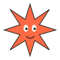
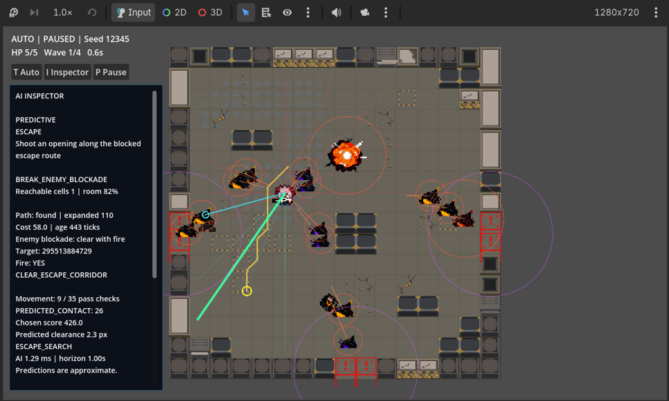
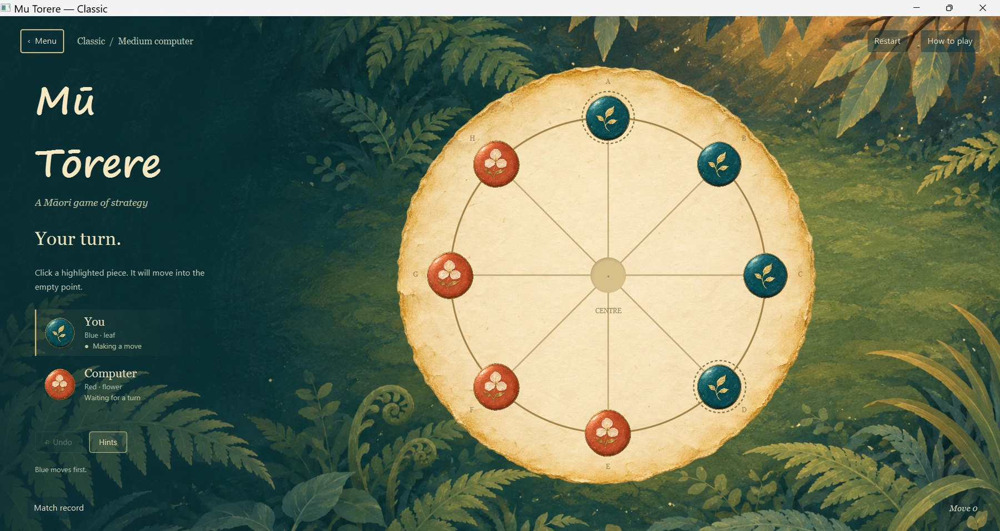

01 / Game AI
01 / Game AIA retro Snake game with four distinct AI opponents—and a developer view that reveals how they choose, predict, and escape.
- My role
- Game systems, AI & visual direction
- Solo / group
- Solo project
- When
- Oct–Nov 2026
Five projects in game AI, engine programming, and rule design. Explore the decisions behind them, my contribution, and how the systems work.

01 / Game AIA retro Snake game with four distinct AI opponents—and a developer view that reveals how they choose, predict, and escape.
 02 / Game engineering
02 / Game engineeringMy first Unreal project: a tutorial-based FPS extended through C++ gameplay migration and a new survival arena, Quarantine Yard.

03 / Game AIA Godot survival shooter extended with an inspectable Auto player, predictive steering, and a standalone C++ pathfinding library.

04 / Systems & rulesA Java course board game developed into a desktop prototype with computer opponents and an experimental two-vacancy variant.
 05 / Systems & rules
05 / Systems & rulesA C++ monster-battle assignment extended into a Godot prototype about combat balance, consistent turns, and readable feedback.
Explore my code and follow what I’m learning.